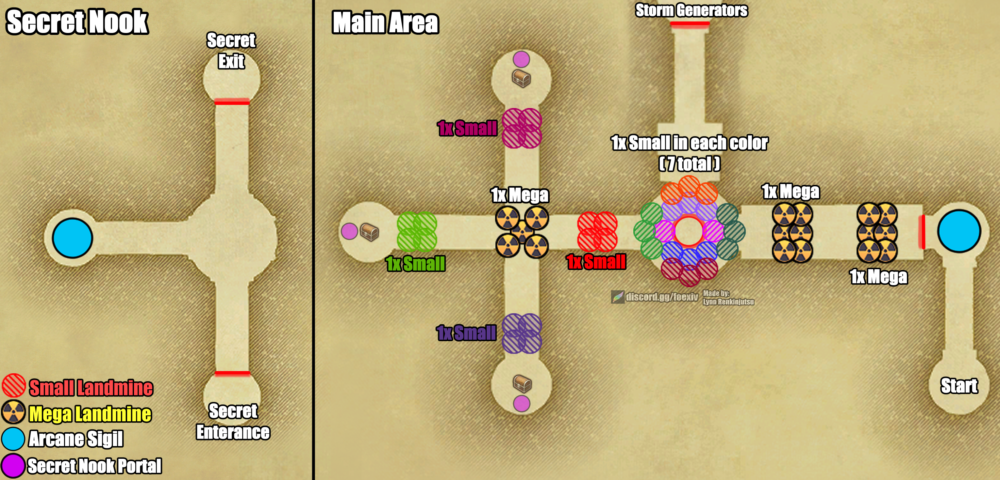

Traversal
Central Mezzanine
The bridge and mezzanine section between Sword Dancer and Storm Generators. Also referred to as “Bridge.”
Overview
After defeating Sword Dancer, the raid advances into the Central Mezzanine. This section features a trap-dense Main Area arranged around a central circular hub with branching cardinal corridors, leading northward to the Storm Generators. It also contains an optional Secret Nook area accessed through a one-time hidden teleportation portal.
Trap spots spawn in colour-coded groups. Only one trap per colored cluster will be active. Listen closely to your raid leader before moving or disarming.

Explosive Traps
Small Landmines: Detonates with a lethal AoE affecting the trigger and nearby players. The Phantom Ranger disarms these using Occult Falcon.
Mega Landmines: Massive explosion radius that may cause a full wipe. The Phantom Ranger must disarm at maximum range with everyone waiting far behind.
Never disarm a trap without the raid leader's permission. Always confirm positioning before executing any disarm.
- Trap Distribution:
- Eastern Entrance Corridor: Two 6-trap clusters, each containing 1x Mega Landmine.
- Central Circular Hub: Contains 1x Small Landmine in each of 7 color groups (7 live traps total around the ring).
- North Corridor: 1x Small Landmine (pink set) leading to the northern chest/portal spot.
- West Corridor: 1x Small Landmine (red set), 1x Mega Landmine (yellow set), and 1x Small Landmine (green set).
- South Corridor: 1x Small Landmine (purple set) leading to the southern chest/portal spot.
Secret Nook & Lockward Entrap
The Secret Nook is an isolated side area that contains additional rewards and an Arcane Sigil puzzle.
- Lockward 'Entrap' Requirement:
- The Lockward enemy in the mezzanine must finish casting 'Entrap' at least once for the Secret Nook portal to spawn.
Trap Reset Warning: When the Lockward finishes casting 'Entrap', ALL traps across the entire main area reset (including Mega Landmines!). Do not wander back into previously cleared corridors without redetecting and redisarming.
- Secret Nook Portal Rules:
- The hidden portal spawns in one of three possible spots at the end of the North, West, or South corridors.
- Single-Use Only: The hidden portal can only be used once! Ensure everyone who needs to teleport gathers at the portal before anyone clicks it.
- Secret Nook Area: Arrive at the Secret Entrance, drag adds to the cyan Arcane Sigil, kill 4 adds on top of the sigil, and proceed to the Secret Exit.
Mechanics & Progression
- Arcane Sigils:
- Kill 4 of any add on top of the Arcane Sigils to clear barriers and progress the puzzle.
- Hidden Chests & Tower Crusaders:
- Phantom Thieves can reveal hidden chest locations at the ends of the corridors.
- Tower Crusader: All hidden chest locations carry a chance of spawning an aggressive Tower Crusader add instead of a chest when percepted. Be prepared to immediately tank and burn it down.
Phantom Job Responsibilities
Thief
- Use Trap Detection to reveal landmines throughout the hub and cardinal paths.
- Be ready to redetect traps after the Lockward casts Entrap.
- Locate the Secret Nook Portal and percept hidden chests, watching for potential Tower Crusader spawns.
Ranger
- Disarm small landmines using Occult Falcon when called.
- Disarm Mega Landmines at maximum range only when everyone is safely positioned behind you.
- Remain alert for newly reset traps after Entrap finishes.
Time Mage
- Use Occult Slowga on trash packs to reduce incoming damage and delay abilities.
Samurai
- Use Iainuki on enemy packs for a chance to instantly kill enemies.
Black Mage
- Use Occult Toad to transform enemies into frogs, rendering them near harmless and reducing their damage dealt by 99%.